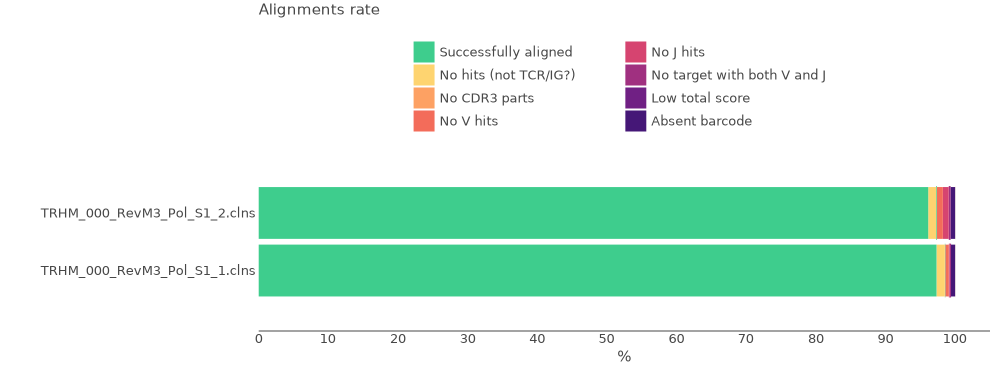
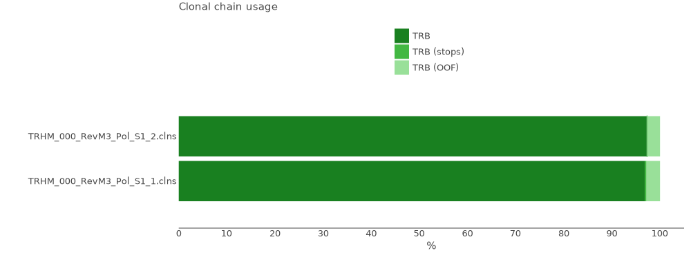
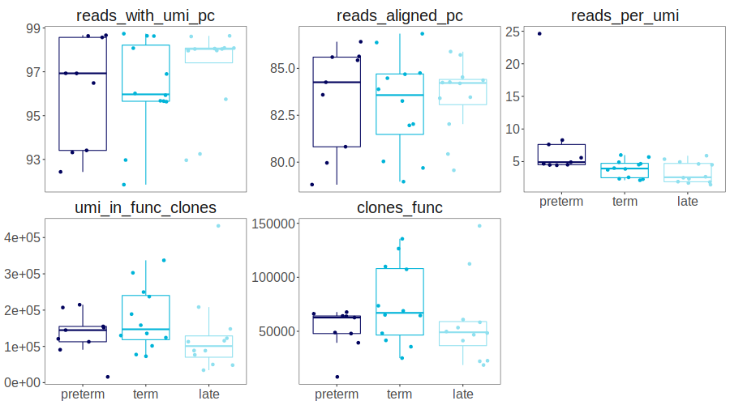

Usage: working with MiXCR
MiXCR is the leading software for generating clonoset tables from raw FastQ files. MiXCR module allows to run MiXCR 4.3+ batch analyses with SLURM queue manager.
Setting up the environment
Before getting started, make sure that main_repseq environment is chosen. Otherwise, check the installation guide
Working with metadata and creating a dataframe with samples
Create sample_df from dataset metadata in .yaml format (if it's in a tabular format, use external libraries such as Pandas). Remove unnesessary columns if needed. Note If METADATA_FILENAME is absent, it is set to metadata.yaml by default. Note that this is relevant only for metadata created with NGSiK in CDR3.net group.
If your dataset does not have metadata, create the dataframe manually. The neccessary columns are: R1, R2, sample_id, where R1 and R2 contain paths (using full paths is strongly advised) to respective raw files, and sample_id are arbitrary unique identificators.
from repseq import mixcr as mx
from repseq import slurm
from repseq import io as repseqio
sample_df = repseqio.read_yaml_metadata(RAW_DATA_DIR, filename=METADATA_FILENAME)
metadata = sample_df.prop(columns=['R1', 'R2'])
output_dir = ...
path_to_mixcr_binary = ...
sample_df example:
| sample_id | R1 | R2 | |
|---|---|---|---|
| 0 | sample_1_nCD4 | /home/user/samples/sample1_nCD4_1_TRB_L001_R1_001.fastq.gz | /home/user/samples/sample1_nCD4_1_TRB_L001_R2_001.fastq.gz |
| 1 | sample_2_nCD4 | /home/user/samples/sample2_nCD4_1_TRB_L001_R1_001.fastq.gz | /home/user/samples/sample2_nCD4_1_TRB_L001_R2_001.fastq.gz |
| 2 | sample_3_nCD4 | /home/user/samples/sample3_nCD4_1_TRB_L001_R1_001.fastq.gz | /home/user/samples/sample3_nCD4_1_TRB_L001_R2_001.fastq.gz |
Command template for mixcr analyze
Create a command template for mixcr analyze. The default template is mixcr analyze milab-human-rna-tcr-umi-multiplex -f r1 r2 output_prefix for Milab Hum TCR RNA multiplex kit. The default values are 32 GB for memory (required OOM in GB), 1.5 hours for time_estimate and 40 for cpus (in case of Aldan3 server, it is the size of a smallest node). Note that mixcr analyze and r1 r2 output_prefix are "magical" parts of the template that should be kept as-is in the template, so change only the part in-between these parts.
For more detailed information on MiXCR presets, visit the MiXCR website.
Running mixcr analyze in batches using SLURM
Run mixcr analyze in batches (Relevant only for servers using SLURM). This function generates a set of commands for each sample by creating a SLURM script for each command and submitting them to the SLURM queue. Scripts itself and .log files (contain std.out and std.error outputs) will be saved in ~/temp/SLURM.
mx.mixcr4_analyze_batch(sample_df, output_dir, command_template=mixcr_race_command_template,
path_to_mixcr_binary)
To check the progress, use check_slurm_progress. loop set to True gives real-time updates with 0.5 s interval while loop=False shows current progress and runs in the background without blocking other cells.
Currently, check_slurm_progress might be unreliable in some cases, thus it's recommended to check SLURM queue and .log files in ~/temp/SLURM folder manually.
Making report images
Make reports (combines mixcr exportQc align, chainUsage and tags) and get report images (both .pdf and .svg for align and chainUsage, only .pdf for tags). To see report images examples, visit the MiXCR website.
- align — exports various quality control metrics
- chainUsage — calculates chain usage across all clonotypes
- tags — for samples with barcodes, provides barcode coverage statistics for every sample
To see progress, use check_slurm_progress as shown below
mx.mixcr4_reports(output_dir, mixcr_path=path_to_mixcr_binary)
slurm.check_slurm_progress(os.path.join(output_dir, "mixcr_reports_slurm_batch.log"), loop=True)
mx.show_report_images(output_dir)


Creating a table containing clonosets stats
Get a tabular report using get_processing_table function. It searches for clonosets in the the folder, extracts their sample_id's and shows main
processing stats in a table format. By default does not show "off-target" clonosets -
those having less than 1% (default, may be overriden) of reads for the sample_id.
For example, you have sequenced TRB sample, but there is found 0.5% (by read count)
of TRA chains for the same sample_id, then the clonoset will not be shown in the table.
You can specify show_offtarget=True to display all found chains in the table or
outherwise set a higher value for offtarget_chain_threshold (0.01 by default).
A full processing table example:
| sample_id | extracted_chain | reads_total | reads_with_umi_pc | reads_aligned_pc | reads_overlapped_aln_pc | total_umi | umi_after_correction | overseq_threshold | reads_after_filter | umi_after_filter | reads_per_umi | clones_total | reads_in_clones_total | clones | reads_in_clones | clones_func | reads_in_func_clones | umi_in_clones | umi_in_func_clones | |
|---|---|---|---|---|---|---|---|---|---|---|---|---|---|---|---|---|---|---|---|---|
| 0 | sample1_nCD4_1_TRB | TRB | 2120957 | 98.63 | 86.38 | 4.97 | 597401 | 564176 | 2 | 1612478 | 344972 | 4.67 | 145019 | 1566962 | 145012 | 1566949 | 135644 | 1509856 | 349587 | 337223 |
| 3 | sample2_nCD4_1_TRB | TRB | 1484339 | 98.64 | 85.43 | 3.49 | 242845 | 223565 | 3 | 1183345 | 155008 | 7.63 | 69771 | 1167512 | 69770 | 1167509 | 66237 | 1133350 | 156334 | 151913 |
| 6 | sample3_nCD4_1_TRB | TRB | 940861 | 96.49 | 86.42 | 2.84 | 279362 | 236455 | 2 | 734134 | 157646 | 4.66 | 68466 | 715176 | 68465 | 715174 | 64208 | 690533 | 160301 | 154995 |
Some columns may be omitted for better readability:
small_proc_table = proc_table[["sample_id", "extracted_chain","reads_total", "reads_with_umi_pc", "reads_aligned_pc", "reads_per_umi", "overseq_threshold","clones_func", "umi_in_func_clones"]]
Columns:
| Parameters | Description |
|---|---|
| sample_id | sample_id specified in the clonoset filename |
| extracted_chain | clonoset сhain specified in the clonoset filename (e.g., TRA, IGH). One sample (particular sample_id) might include multiple chains depending on the protocol used and the values of the show_offtarget and the offtarget_chain_threshold parameters |
| reads_total | a total number of raw reads for the whole sample |
| reads_with_umi_pc | Percentage of reads with barcodes if tag-pattern was used |
| reads_aligned_pc | Percentage of successfully aligned reads for the whole sample |
| reads_overlapped_aln_pc | Percentage of overlapping reads of all aligned reads |
| total_umi | Total number of UMIs before any filtering |
| umi_after_correction | Number of UMIs after PCR and sequencing error correction |
| overseq_threshold | Reads per group threshold used for filtering and selected by MiXCR |
| reads_after_filter | Number of reads after filtering |
| umi_after_filter | Number of UMIs after filtering |
| reads_per_umi | Average number of reads per UMI |
| clones_total | Total number of clonotypes according to MiXCR assemble report |
| reads_in_clones_total | Number of reads assigned to clonotypes for the whole sample |
| clones | Number of clonotypes in a clonoset for a given chain |
| reads_in_clones | Number of reads in a clonoset for a given chain |
| clones_func | Number of functional clonotypes (no frameshifts and stops) |
| reads_in_func_clones | Number of reads in functional clonotypes |
| umi_in_clones | Number of UMIs in a clonoset for a given chain |
| umi_in_func_clones | Number of UMIs in functional clonotypes |
Visualization
Properties from proc_table can be visualized in Jupyter notebook using %%R cell magic. 
%load_ext rpy2.ipython
%%R -i proc_table -w 900 -h 500
params_order <- c("reads_with_umi_pc", "reads_aligned_pc","reads_per_umi","umi_in_func_clones","clones_func")
proc_table %>%
select(sample_id, experimental_group, subset, reads_per_umi, reads_with_umi_pc, reads_aligned_pc, clones_func, umi_in_func_clones) %>%
pivot_longer(-c(sample_id, experimental_group, subset), names_to="parameter", values_to="value") %>%
mutate(experimental_group=factor(experimental_group, group_order)) %>%
mutate(parameter=factor(parameter, params_order)) %>%
ggplot(aes(x=experimental_group, y=value, color=experimental_group)) +
geom_boxplot(outlier.shape=NA)+
geom_jitter()+
facet_wrap(vars(parameter), scales="free_y")+
scale_color_manual(values=colors_6_groups) +
boxplot_theme+
theme(legend.position="none")